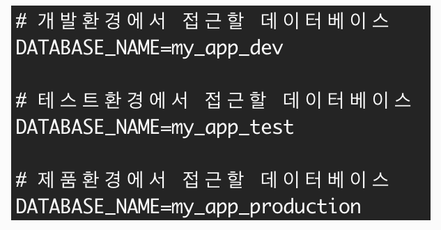

공개할 수 없는 정보가 코드에 포함될 경우 해당 정보의 노출을 방지하기 위해 PC에 저장해두고 사용해야 한다.
JS에서 변수에 문자열을 할당하는 것처럼 해당 정보를 PC에서 사용하는 변수에 할당하고 사용할 수 있다.
Linux 기반의 운영체제의 PC에는 시스템 자체에 전역변수를 설정할 수 있으며 시스템에 설정한 전역변수를 환경변수라고 한다.
환경변수는 export를 이용해 설정할 수 있으며 터미널에서 export 명령어를 통해 기록된 환경변수를 확인하거나
새로운 환경변수를 추가할 수 있다.
또한 echo 명령어와 함께 환경변수를 입력하면 환경변수의 값을 확인할 수 있다.
이때 환경변수의 앞에는 달러사인($)을 입력하여 변수라는 뜻을 터미널에 전달해야한다.
export
export <variable_name>=<variable_value>
echo $<variable_name> // expected output : <variable_value>
이 때 등호 표시(=) 앞뒤에는 반드시 공백이 없어야 한다.
npm 모듈인 dotenv를 사용하면 JS에서 환경변수를 사용할 수 있다.
npm i dotenv
const dotenv = require("dotenv");
dotenv.config();
환경변수를 Linux 운영체제에 저장하는 방법은 여러 가지가 있지만 Node.js에서는 파일 .env를 만들어 저장하는 방법을 사용한다.
모듈 dotenv를 이용하면 파일 .env에 저장한 환경변수를 조회할 수 있다.
dotenv는 디폴트로 현재 디렉토리에 위치한 .env 파일로 부터 환경 변수를 읽는다.
.env 파일을 생성하고 사용하고자 하는 환경변수를 key=value 형태로 작성한다.
환경변수 사용의 장점으로는 공개할 수 없는 정보(API key, DB password 등)를 환경변수를 이용해 저장하고 관리할 수 있다.
뿐만 아니라 서로 다른 PC 또는 여러 .env 파일에서 같은 변수 이름에 다른 값을 할당할 수 있다.
예를들어 개발, 테스트, 제품 환경에 따라 DB가 다르다면 같은 변수 이름에 다른 DB 값을 할당하여 사용할 수 있다.
